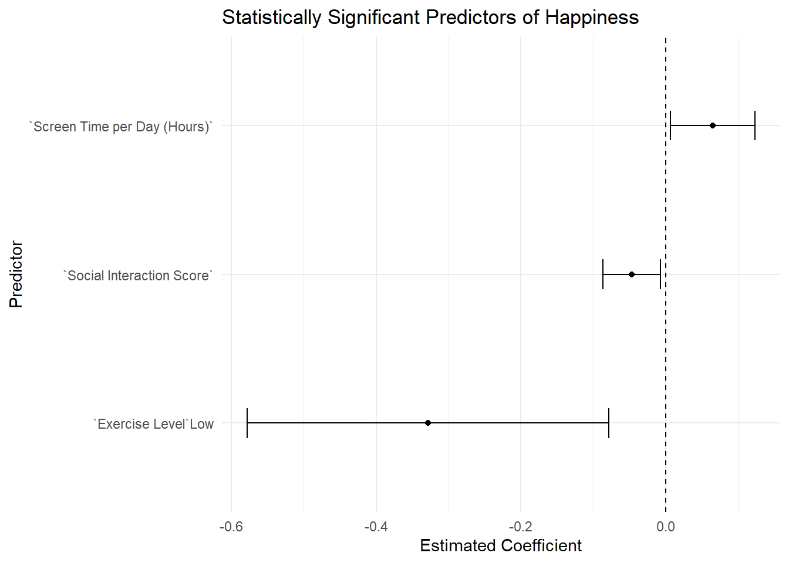

library(here)
library(readr)
library(dplyr)
library(rsample)
library(ggplot2)
library(naniar)
library(parsnip)
library(recipes)
library(workflows)
library(tune)
library(yardstick)
library(dials)
library(glmnet)
library(selectiveInference)
library(broom)Predicting Happiness from Lifestyle and Mental Health Factors
Motivation and Context
Mental health is one of the most important parts of a person’s overall well-being. One way to measure how people feel is by looking at their happiness—a key part of mental health. This project looks at how daily habits like diet, exercise, sleep, and screen time, as well as mental health conditions like anxiety or depression, might affect how happy people feel.
This topic matters to me because I believe small lifestyle changes can make a big difference in how we feel each day. If we can find out which habits or health conditions have the strongest connection to happiness, people can make better decisions for their own well-being. This research could also be useful for doctors, therapists, teachers, and public health leaders who want to help others feel happier and healthier.
To follow along with this analysis, it helps to understand a few key terms:
Diet Types
- Vegetarian: Does not include meat but may include dairy or eggs.
- Vegan: Does not include any animal products, including dairy, eggs, or honey.
- Balanced diet: Includes a mix of healthy foods like fruits, vegetables, proteins, grains, and fats.
- Keto: A low-carb, high-fat diet that helps the body burn fat instead of sugar for energy.
- Junk food: Foods that are highly processed and full of sugar or unhealthy fats, like fast food and soda.
Mental Health Conditions
- PTSD: A condition that can happen after a scary or traumatic event, causing flashbacks or anxiety.
- Depression: A condition where a person feels very sad, hopeless, and loses interest in things they used to enjoy.
- Anxiety: Strong feelings of worry or fear that can get in the way of daily life.
- Bipolar disorder: A condition where a person’s mood swings between extreme highs (called mania) and deep lows (depression).
Many scientists and health experts believe there is a strong connection between lifestyle, mental health, and happiness. For example, getting regular exercise can boost mood, while poor sleep or high stress can make people feel worse. This project will explore those connections and try to figure out which habits and conditions are most related to how happy someone feels.
Main Objective
The main goal of this project is to predict a person’s happiness score based on their lifestyle habits and mental health conditions.
By analyzing the “Mental Health and Lifestyle Habits Dataset (2019–2024),” I aim to identify which factors—such as diet, exercise, sleep, screen time, and existing mental health conditions—are most strongly associated with happiness. To do this, I will use a statistical modeling technique called LASSO regression, which not only builds a predictive model but also helps select the most important variables from the data.
Ultimately, the objective is to better understand how everyday choices and psychological well-being are linked to happiness, and to provide insights that could help individuals and professionals support mental health more effectively.
Packages Used In This Analysis
| Package | Use |
|---|---|
| here | to easily load and save data |
| readr | to import the CSV file data |
| dplyr | to massage and summarize data |
| rsample | to split data into training and test sets |
| ggplot2 | to create nice-looking and informative graphs |
| naniar | to summarize and visualize missing data |
| parsnip | to define and fit models in a unified framework |
| recipes | to preprocess data through feature engineering steps |
| workflows | to combine preprocessing and modeling into a single object |
| tune | to tune model hyperparameters through resampling |
| yardstick | to evaluate and compare model performance |
| dials | to define and generate hyperparameter tuning grids |
| glmnet | to fit regularized linear models like LASSO and Ridge |
| selectiveInference | to compute post-selection inference for LASSO models |
| broom | to convert model outputs into tidy tibbles |
Data Description
The dataset used in this project is titled “Mental Health and Lifestyle Habits (2019–2024)”, and it was created to explore the relationship between people’s lifestyle choices and their mental well-being. The data was collected from individuals around the world between 2019 and 2024 using online surveys and self-reported questionnaires.
The dataset was uploaded to Kaggle by Atharva Soundankar in 2025 and is publicly available for analysis. You can access it at the following link:
Soundankar, Atharva. Mental Health and Lifestyle Habits (2019–2024). Kaggle, 2025
This dataset includes 12 variables:
| Variable | Type | Description |
|---|---|---|
Country |
chr | The respondent’s country of residence |
Age |
dbl | Age of the respondent (in years) |
Gender |
chr | Gender identity of the respondent |
Exercise Level |
chr | Frequency or intensity of physical activity (e.g., low, moderate, high) |
Diet Type |
chr | Type of diet (e.g., vegetarian, vegan, balanced, keto, junk food) |
Sleep Hours |
dbl | Average number of hours of sleep per day |
Stress Level |
chr | Self-reported stress level (e.g., low, moderate, high) |
Mental Health Condition |
chr | Any diagnosed mental health condition (e.g., anxiety, depression, PTSD) |
Work Hours per Week |
dbl | Number of hours worked per week |
Screen Time per Day (Hours) |
dbl | Average number of hours spent looking at screens each day |
Social Interaction Score |
dbl | Self-rated score of social connection or engagement on scale (1–10) |
Happiness Score |
dbl | Self-reported happiness score on scale (1–10) |
These variables provide a mix of demographic, behavioral, and psychological information that allows us to investigate how different aspects of daily life and mental health may influence a person’s overall happiness.
Mental.Health.Lifestyle <- read_csv("Mental_Health_Lifestyle_Dataset.csv")
head(Mental.Health.Lifestyle)# A tibble: 6 × 12
Country Age Gender `Exercise Level` `Diet Type` `Sleep Hours` `Stress Level`
<chr> <dbl> <chr> <chr> <chr> <dbl> <chr>
1 Brazil 48 Male Low Vegetarian 6.3 Low
2 Austra… 31 Male Moderate Vegan 4.9 Low
3 Japan 37 Female Low Vegetarian 7.2 High
4 Brazil 35 Male Low Vegan 7.2 Low
5 Germany 46 Male Low Balanced 7.3 Low
6 Japan 23 Other Moderate Balanced 2.7 Moderate
# ℹ 5 more variables: `Mental Health Condition` <chr>,
# `Work Hours per Week` <dbl>, `Screen Time per Day (Hours)` <dbl>,
# `Social Interaction Score` <dbl>, `Happiness Score` <dbl>Data Limitations
Although the “Mental Health and Lifestyle Habits Dataset (2019–2024)” is useful for practicing data analysis and modeling, it has several problems that we should keep in mind:
The data is self-reported:
All the information in this dataset comes from people filling out surveys about themselves. This means there is no way to check if what they reported is accurate. People might overestimate healthy habits (like saying they exercise more than they do) or underestimate unhealthy ones (like not getting enough sleep). They might also give answers they think are more socially acceptable instead of being completely honest. This can make the data less reliable.
Some variables are unclear or inconsistent:
Some of the questions in the dataset are vague or not measured well. For example:
“Stress Level” is said to be on a 1–10 scale in the Kaggle dataset’s description, but the data uses categories like “Low,” “Moderate,” and “High,” which does not match.
“Exercise Level” is just labeled as “Low,” “Moderate,” or “High,” but it doesn’t tell us how often or how intensely people exercise.
The “Mental Health Condition” column includes things like depression and anxiety, but it doesn’t explain how severe they are or how they were diagnosed. These conditions are very complex, and simple labels might not show the full picture.
Some data is missing or unclear:
For example, the “Gender” column includes a large number of people marked as “Other,” but it’s not clear what that means—whether they’re non-binary, chose not to say, or something else. Without more detail, it is hard to use this information meaningfully.
The results might not apply to everyone:
The dataset was collected between 2019 and 2024, a period that included the COVID-19 pandemic, which had a major impact on people’s daily lives and mental health. Because of this, the results might not reflect what’s normal in other years. Also, we do not know where the participants are from or how they were selected, so the dataset might not represent people from different countries, cultures, or income levels. That means any patterns we find might not apply to everyone.
Because of these issues, we should treat this dataset more like a practice dataset—similar to examples used in class—rather than something that gives real-world, trustworthy results. It’s still helpful for learning how to explore data and build models, but the results should not be taken as scientifically accurate.
Data Wrangling (Optional Section)
The dataset I imported is already in a tidy format, meaning each row represents one observation and each column represents a variable. Therefore, no structural reshaping of the data was required.
However, to build and evaluate a predictive model effectively, it is essential to split the data into two parts: a training set and a test set. The training set (80% of the data) will be used to build the model and identify relationships between predictor variables—such as lifestyle habits and demographic characteristics—and the response variable, which is the Happiness Score. The test set (20% of the data) is held out and used to assess how well the model performs on new, unseen data.
This kind of split is important because it prevents overfitting and helps evaluate how well the model will generalize in real-world applications. The 80/20 ratio is a standard practice that strikes a balance between having enough data to train the model and reserving enough to test it meaningfully. To ensure reproducibility of the results, a random seed was set.
set.seed(123)
n <- nrow(Mental.Health.Lifestyle)
train_indices <- sample(n, size = floor(0.8*n))
MHL_train <- Mental.Health.Lifestyle[train_indices,]
MHL_test <- Mental.Health.Lifestyle[-train_indices,]Handling Missing Data
Before proceeding with modeling or analysis, it’s important to check for any missing data. Identifying missing values early allows us to decide whether to impute (fill in), remove, or otherwise handle them to avoid bias or errors.
miss_var_summary(Mental.Health.Lifestyle)# A tibble: 12 × 3
variable n_miss pct_miss
<chr> <int> <num>
1 Country 0 0
2 Age 0 0
3 Gender 0 0
4 Exercise Level 0 0
5 Diet Type 0 0
6 Sleep Hours 0 0
7 Stress Level 0 0
8 Mental Health Condition 0 0
9 Work Hours per Week 0 0
10 Screen Time per Day (Hours) 0 0
11 Social Interaction Score 0 0
12 Happiness Score 0 0After running the code, there are no missing values in any of the columns. This simplifies the data preparation process, as no imputation or data cleaning for missing values is currently required.
Exploratory Data Analysis
My objective is to understand how lifestyle factors may influence an individual’s overall happiness, specifically focusing on how screen time and sleep hours might relate to the happiness score. Since I have not yet conducted feature selection (e.g., via LASSO), I do not know which predictors are statistically most important. However, based on intuition and prior research, I initially suspect that screen time per day and sleep hours could play a meaningful role in predicting happiness.
This section explores three key variables:
Happiness Score(the response variable)Screen Time per Day (Hours)(a potentially important predictor)Sleep Hours(a potentially important predictor)
The following analysis examines the distributions of these variables, checks for unusual or problematic values, and begins to explore their relationships to guide future modeling.
1. Happiness Score (Response Variable)
Check for unusual values
# since `Happiness Score` is on the scale 1 - 10
unusual_happiness <- MHL_train |> filter(`Happiness Score` < 1 | `Happiness Score` > 10)
unusual_happiness# A tibble: 0 × 12
# ℹ 12 variables: Country <chr>, Age <dbl>, Gender <chr>, Exercise Level <chr>,
# Diet Type <chr>, Sleep Hours <dbl>, Stress Level <chr>,
# Mental Health Condition <chr>, Work Hours per Week <dbl>,
# Screen Time per Day (Hours) <dbl>, Social Interaction Score <dbl>,
# Happiness Score <dbl>Then, there is no unusual values — all scores fall between 1 and 10, as expected.
Summary statistics
MHL_train |>
summarize(
num_total = n(),
num_missing = sum(is.na(`Happiness Score`)),
min = min(`Happiness Score`, na.rm = TRUE),
Q1 = quantile(`Happiness Score`, 0.25),
median = median(`Happiness Score`),
Q3 = quantile(`Happiness Score`, 0.75),
max = max(`Happiness Score`),
mean = mean(`Happiness Score`),
sd = sd(`Happiness Score`),
IQR = IQR(`Happiness Score`)
)# A tibble: 1 × 10
num_total num_missing min Q1 median Q3 max mean sd IQR
<int> <int> <dbl> <dbl> <dbl> <dbl> <dbl> <dbl> <dbl> <dbl>
1 2400 0 1 3.2 5.4 7.5 10 5.40 2.55 4.3Visualization
ggplot(data = MHL_train,
mapping = aes(
x = `Happiness Score`
)
) +
geom_histogram(center = 5, binwidth = 0.4) +
labs(title = "Histogram of Happiness Score", x = "Happiness Score")Interpretation:
The happiness scores range from 1 to 10, with an average (mean) of approximately 5.4 and a standard deviation of about 2.55. The distribution appears fairly spread out and roughly uniform across the scale, meaning that respondents reported happiness levels that are quite evenly distributed from low to high. This uniformity is somewhat unusual for a subjective well-being measure, which often shows skewed or clustered patterns in real-world data. The absence of extreme outliers is also notable. Overall, this pattern raises questions about how the happiness scores were generated or categorized—whether the respondents truly felt evenly distributed levels of happiness, or if the data collection process or scale used may have led to artificial uniformity.
2. Screen Time per Day (Hours)
Check for unusual values
# since one day has 24 hours and the number of hours cannot be negative
unusual_screen_time <- MHL_train |> filter(
`Screen Time per Day (Hours)`< 0 | `Screen Time per Day (Hours)` > 24)
unusual_screen_time# A tibble: 0 × 12
# ℹ 12 variables: Country <chr>, Age <dbl>, Gender <chr>, Exercise Level <chr>,
# Diet Type <chr>, Sleep Hours <dbl>, Stress Level <chr>,
# Mental Health Condition <chr>, Work Hours per Week <dbl>,
# Screen Time per Day (Hours) <dbl>, Social Interaction Score <dbl>,
# Happiness Score <dbl>Then, there is no extreme values — all screen times fall between 0 and 24.
Summary statistics
MHL_train |>
summarize(
num_total = n(),
num_missing = sum(is.na(`Screen Time per Day (Hours)`)),
min = min(`Screen Time per Day (Hours)`),
Q1 = quantile(`Screen Time per Day (Hours)`, 0.25),
median = median(`Screen Time per Day (Hours)`),
Q3 = quantile(`Screen Time per Day (Hours)`, 0.75),
max = max(`Screen Time per Day (Hours)`),
mean = mean(`Screen Time per Day (Hours)`),
sd = sd(`Screen Time per Day (Hours)`),
IQR = IQR(`Screen Time per Day (Hours)`)
)# A tibble: 1 × 10
num_total num_missing min Q1 median Q3 max mean sd IQR
<int> <int> <dbl> <dbl> <dbl> <dbl> <dbl> <dbl> <dbl> <dbl>
1 2400 0 2 3.5 5.1 6.6 8 5.08 1.75 3.1Visualization
ggplot(data = MHL_train,
mapping = aes(
x = `Screen Time per Day (Hours)`
)
) +
geom_histogram(center = 5, binwidth = 0.3) +
labs(title = "Histogram of Screen Time per Day", x = "Screen Time per Day (Hours)")Interpretation: Screen time per day ranges from 2 to 8 hours, with an average of around 5.08 hours. The data seems evenly spread out across this range, with no extreme values. However, this even distribution is unusual and may suggest that the data was collected in a way that limited the variety of screen time reported. For example, the data might have been grouped into specific time ranges (like 2 to 3 hours, 4 to 5 hours, etc.), which could explain why there are no values below 2 hours or above 8 hours. Normally, we’d expect more variation in screen time, so this pattern might point to how the data was recorded or categorized.
3. Sleep Hours
Check for unusual values
# since one day has 24 hours and the number of hours cannot be negative
unusual_sleep <- MHL_train |> filter(
`Sleep Hours`< 0 | `Sleep Hours` > 24)
unusual_sleep# A tibble: 0 × 12
# ℹ 12 variables: Country <chr>, Age <dbl>, Gender <chr>, Exercise Level <chr>,
# Diet Type <chr>, Sleep Hours <dbl>, Stress Level <chr>,
# Mental Health Condition <chr>, Work Hours per Week <dbl>,
# Screen Time per Day (Hours) <dbl>, Social Interaction Score <dbl>,
# Happiness Score <dbl>Then, there is no invalid sleep durations — all values fall within a realistic 0–24 hour range.
Summary statistics
MHL_train |>
summarize(
num_total = n(),
num_missing = sum(is.na(`Sleep Hours`)),
min = min(`Sleep Hours`),
Q1 = quantile(`Sleep Hours`, 0.25),
median = median(`Sleep Hours`),
Q3 = quantile(`Sleep Hours`, 0.75),
max = max(`Sleep Hours`),
mean = mean(`Sleep Hours`),
sd = sd(`Sleep Hours`),
IQR = IQR(`Sleep Hours`)
)# A tibble: 1 × 10
num_total num_missing min Q1 median Q3 max mean sd IQR
<int> <int> <dbl> <dbl> <dbl> <dbl> <dbl> <dbl> <dbl> <dbl>
1 2400 0 1.4 5.5 6.5 7.5 11.3 6.49 1.49 2Visualization
ggplot(data = MHL_train,
mapping = aes(
x = `Sleep Hours`
)
) +
geom_histogram(center = 6, binwidth = 0.4) +
labs(title = "Histogram of Sleep Hours", x = "Sleep Hours")Interpretation: Sleep hours range from about 1.4 to 11.3 hours, with an average of approximately 6.5 hours. Most people sleep between 5.5 and 7.5 hours, which centers around the recommended 7–8 hours of sleep per night. The distribution has a bell-shaped curve, which is typical for sleep data. There are no extreme outliers, and the spread seems reasonable. This suggests that the sleep data is likely realistic and reflects a natural variation in how long people sleep.
4. Relationship between Lifestyle and Happiness
a) Screen Time vs Happiness
ggplot(data = MHL_train,
mapping = aes(
x = `Screen Time per Day (Hours)`,
y = `Happiness Score`
)
) +
geom_point(size = 0.8) +
labs(title = "Screen Time per Day (Hours) vs. Happiness Score",
x = "Screen Time per Day (Hours)",
y = "Happiness Score") +
geom_smooth(method = "loess", se = FALSE)
Scatterplot Interpretation:
The scatterplot shows that happiness scores are fairly spread out across all levels of screen time. There is no clear upward or downward trend, although the smoothed line suggests a slight dip in happiness at moderate screen time levels, followed by a small increase. Overall, no strong pattern emerges.
Correlation Analysis:
cor(MHL_train$`Happiness Score`, MHL_train$`Screen Time per Day (Hours)`)[1] 0.04427989The correlation coefficient is approximately 0.044, indicating a very weak positive linear relationship between screen time and happiness. This supports the visual observation that screen time, at least on its own, does not have a meaningful impact on happiness in this dataset.
Conclusion:
There appears to be no significant relationship between screen time and happiness score. People with both low and high screen time report a wide range of happiness scores, and the slight trends in the data are not strong enough to suggest a real pattern. That means, screen time might still play a role when combined with other factors like sleep or stress. To get a better understanding of what influences happiness, it will be helpful to look at other lifestyle habits such as Sleep Hours.
b) Sleep Hours vs Happiness
ggplot(data = MHL_train,
mapping = aes(
x = `Sleep Hours`,
y = `Happiness Score`
)
) +
geom_point(size = 0.8) +
labs(title = "Sleep Hours vs. Happiness Score",
x = "Sleep Hours",
y = "Happiness Score") +
geom_smooth(method = "loess", se = FALSE)Scatterplot Interpretation:
The scatterplot shows the relationship between sleep hours and happiness score. Although the data points are highly dispersed, a smoothed trend line reveals a subtle non-linear pattern. Specifically, individuals who report very few hours of sleep (e.g., less than 4 hours) tend to have slightly higher happiness scores, but the trend then dips and gradually levels off as sleep duration increases. Overall, the association between sleep and happiness appears weak and inconsistent, suggesting that sleep duration alone does not strongly predict happiness.
Correlation Analysis:
cor(MHL_train$`Happiness Score`, MHL_train$`Sleep Hours`)[1] 0.00852507The correlation coefficient is 0.0085, which is extremely close to zero. This confirms that there’s essentially no linear relationship between sleep and happiness in this dataset.
Conclusion:
The effect of sleep hours on happiness score is very small. This suggests that sleep alone likely does not play a major role in determining happiness — though it could interact with other factors like stress, screen time, or social interaction.
The exploratory analysis suggests that neither screen time nor sleep hours individually show a strong relationship with happiness score. To better understand what drives happiness, we now turn to modeling, where we will consider multiple lifestyle variables together. By using statistical and machine learning techniques, such as LASSO regression, we can identify which predictors are most influential and how they interact to impact happiness.
Modeling
I used LASSO regression (Least Absolute Shrinkage and Selection Operator) to model the relationship between lifestyle factors and happiness score. LASSO is particularly useful when we have many predictors, some of which may be irrelevant. It performs both:
Regularization, to avoid overfitting by penalizing large coefficients
Variable selection, by shrinking some coefficients to exactly zero
This makes the resulting model more interpretable and potentially more generalizable to new data.
Model Specification and Preprocessing
I defined a LASSO regression model with a tunable penalty:
lasso_model <- linear_reg(mode = "regression",
engine = "glmnet",
penalty = tune(),
mixture = 1)Then, I created a preprocessing recipe and combined the model and recipe into a workflow:
lasso_recipe <- recipe(
`Happiness Score` ~ .,
data = MHL_train
) |>
step_dummy(all_nominal_predictors()) |>
step_normalize(all_numeric_predictors())
lasso_wflow <- workflow() |>
add_model(lasso_model) |>
add_recipe(lasso_recipe)Cross-Validation and Tuning
I used 10-fold cross-validation to tune the penalty parameter and tuned the penalty parameter over 200 values:
set.seed(1234)
MHL_folds<-vfold_cv(
MHL_train,
v=10
)
lasso_grid<-grid_regular(penalty(), levels = 200)
lasso_tune<-tune_grid(lasso_model,
lasso_recipe,
resamples= MHL_folds,
grid= lasso_grid,
metrics= metric_set(rmse))I visualized the tuning results:
lasso_tune|>
collect_metrics() |>
filter(.metric== "rmse")|>
ggplot(mapping = aes(x= penalty,y=mean)) + geom_point()+ geom_line() +
geom_segment(aes(x= penalty,xend= penalty, y= mean+ std_err,yend= mean-std_err)) +
scale_x_log10()Best Model Selection and Fitting
I selected the penalty with the lowest RMSE (Root Mean Squared Error):
lasso_min <- lasso_tune |>
select_best(
metric = "rmse"
)
lasso_min# A tibble: 1 × 2
penalty .config
<dbl> <chr>
1 0.0554 Preprocessor1_Model175lasso_wflow_final <- lasso_wflow |>
finalize_workflow(parameters = lasso_min)
lasso_fit <- fit(lasso_wflow_final,
data = MHL_train)Prediction and Model Performance
I chose Root Mean Squared Error (RMSE) as the performance metric because it provides a clear measure of how well the model predicts the Happiness Score, with errors expressed in the same units. RMSE calculates the square root of the average squared differences between predicted and actual values, which penalizes larger errors more heavily. This makes it a useful and interpretable way to evaluate the accuracy of a regression model, especially when predicting a continuous outcome like Happiness Score.
I evaluated the model on the test set:
lasso_predict <- augment(lasso_fit,
new_data = MHL_test
)
lasso_predict |>
rmse(
truth = `Happiness Score`,
estimate = .pred
)# A tibble: 1 × 3
.metric .estimator .estimate
<chr> <chr> <dbl>
1 rmse standard 2.60The RMSE on the test set was 2.598, which means the model’s predictions are off by about 2.6 points on average. Given that the Happiness Score ranges from 0 to 10, this level of error suggests moderate predictive accuracy—the model captures some meaningful patterns in the data but still leaves a substantial portion of the variation unexplained. This indicates that while the model is somewhat useful, there may be other important factors influencing happiness that are not captured by the predictors included.
Coefficients and Significance
I extracted the model coefficients:
lasso_coef <- lasso_fit |>
broom::tidy()
lasso_coef |>
arrange(desc(abs(estimate)))# A tibble: 26 × 3
term estimate penalty
<chr> <dbl> <dbl>
1 (Intercept) 5.40 0.0554
2 Diet Type_Vegetarian 0.0621 0.0554
3 Social Interaction Score -0.0606 0.0554
4 Screen Time per Day (Hours) 0.0573 0.0554
5 Exercise Level_Low -0.0567 0.0554
6 Country_Japan -0.0259 0.0554
7 Country_Canada 0.00118 0.0554
8 Gender_Male 0.000262 0.0554
9 Age 0 0.0554
10 Sleep Hours 0 0.0554
# ℹ 16 more rowsLASSO selected 8 variables with non-zero coefficients (included the intercept). To assess statistical significance, I used a standard linear model and checked 95% confidence intervals:
lm_model <- lm(`Happiness Score` ~
`Diet Type` +
`Social Interaction Score` +
`Screen Time per Day (Hours)` +
`Exercise Level` +
`Country` +
`Gender`,
data = MHL_train)
conf_intervals <- confint(lm_model, level = 0.95)
conf_intervals 2.5 % 97.5 %
(Intercept) 4.997113620 6.070873945
`Diet Type`Junk Food -0.221973229 0.406008192
`Diet Type`Keto -0.367307125 0.276860576
`Diet Type`Vegan -0.350542466 0.294138683
`Diet Type`Vegetarian -0.027753982 0.615275392
`Social Interaction Score` -0.086451628 -0.006668924
`Screen Time per Day (Hours)` 0.006735754 0.123273911
`Exercise Level`Low -0.578269429 -0.078115894
`Exercise Level`Moderate -0.439291666 0.065648209
CountryBrazil -0.588142151 0.192580062
CountryCanada -0.400780960 0.360805223
CountryGermany -0.548976039 0.237555982
CountryIndia -0.616148910 0.158268547
CountryJapan -0.737865428 0.036165263
CountryUSA -0.596192652 0.166992208
GenderMale -0.100042675 0.399369053
GenderOther -0.181244954 0.315859637Only 3 predictors had confidence intervals that did not include 0, suggesting stronger evidence of an association:
Social Interaction Score
Screen Time per Day (Hours)
Exercise LevelLow
However, their confidence intervals were very close to 0, which means that while these predictors are statistically significant, the magnitude of their effects is small. This implies that the relationship with happiness is likely weak in practical terms, even if statistically detectable. (To illustrate, in the “Exploratory Data Analysis” section, we saw that the relationship between Screen Time per Day (Hours) and Happiness Score was very weak.)
Summary
LASSO regression allowed me to build a predictive and interpretable model by selecting a subset of relevant predictors. While the overall model has moderate predictive performance, it highlighted a few key lifestyle factors—like social interaction, screen time, and exercise—that are more consistently related to happiness. However, while three predictors had confidence intervals that excluded zero, their effect sizes were small and close to zero, suggesting that the relationships — though statistically significant — may not be practically strong.
Insights
To summarize the key findings of the model, I generated a plot of the statistically significant predictors of happiness based on a standard linear regression model. The graph below displays each predictor whose 95% confidence interval does not include zero, meaning we have stronger statistical evidence that they are associated with happiness.
coef_df <- tidy(lm_model, conf.int = TRUE)
significant_coefs <- coef_df |>
filter(term != "(Intercept)",
conf.low * conf.high > 0)
ggplot(significant_coefs, aes(x = reorder(term, estimate), y = estimate)) +
geom_point() +
geom_errorbar(aes(ymin = conf.low, ymax = conf.high), width = 0.2) +
geom_hline(yintercept = 0, linetype = "dashed") +
coord_flip() +
labs(
title = "Statistically Significant Predictors of Happiness",
x = "Predictor",
y = "Estimated Coefficient"
) +
theme_minimal()
From this plot, we see that three predictors—Social Interaction Score, Screen Time per Day (Hours), and Exercise Level (Low)—had confidence intervals that did not include zero, indicating statistically significant associations with happiness. However, their estimated effects are close to zero, suggesting that these relationships are weak in practical terms. This finding is consistent with results from the exploratory data analysis, particularly the weak association observed between screen time and happiness. Overall, while the model identifies some lifestyle factors related to happiness, the effect sizes are small, and predictive accuracy remains moderate. The figure reinforces the conclusion that although lifestyle habits like social engagement, screen use, and physical activity are statistically linked to happiness, none of them individually exerts a strong influence. This suggests that happiness is likely shaped by a more complex combination of factors.
Limitations and Future Work
Limitations
While the LASSO model helped identify a small subset of predictors and provided a reasonably interpretable model, there are several limitations:
- Prediction Accuracy: The RMSE of 2.598 indicates that the model’s predictions deviate from actual happiness scores by an average of about 2.6 points on a 0–10 scale. This suggests moderate predictive performance, but also room for improvement—particularly for individuals at the extremes of the happiness scale (very low or very high scores).
- Weak Predictive Relationships: Although three predictors—social interaction, screen time, and exercise—were statistically significant, their coefficients were very close to zero. This implies that their real-world impact on happiness may be quite limited. The model may be missing other unmeasured variables that more strongly influence happiness.
- Assumptions of Linear Modeling: Linear regression assumes a linear relationship between predictors and the outcome, homoscedasticity, and independence of errors. In reality, relationships between lifestyle factors and happiness may be non-linear or influenced by interactions that this model does not capture.
- Multicollinearity: Some predictors in the model, such as exercise, diet, and screen time, may be correlated with each other. This multicollinearity can inflate the standard errors of coefficients in the linear model, making it harder to determine which variables truly influence happiness. While LASSO helps mitigate this issue by shrinking and selecting coefficients, it may still obscure the interpretation of individual effects in the presence of strongly correlated predictors.
- Lack of Temporal or Causal Information: The dataset is observational and cross-sectional, meaning we cannot infer causality. For example, while people who exercise more report higher happiness, we cannot tell if exercise causes happiness or if happier people are more likely to exercise.
- Potential Biases in Data Collection: The dataset may not be fully representative across cultures, age groups, or socioeconomic backgrounds. Some variables (e.g., happiness, social interaction) are self-reported, which introduces measurement error and possible social desirability bias.
Future Work
To address these limitations, several paths for future research are recommended:
- Collect Longitudinal Data: Tracking individuals over time would allow us to better understand causal relationships and how changes in lifestyle affect happiness.
- Explore Non-Linear Models: Using tree-based models (e.g., Random Forest or XGBoost) could help uncover complex, non-linear interactions between variables that linear models cannot capture.
- Investigate Multicollinearity and Dimensionality Reduction: Future work could further investigate correlations among predictors and consider techniques like Principal Component Analysis (PCA) or more robust regularization methods to reduce multicollinearity. These approaches may help clarify underlying patterns and improve model stability and interpretability.
- Feature Engineering: Creating new variables that better capture lifestyle habits (e.g., a composite wellness index or interaction terms) could improve predictive power.
- Expand Data Collection: Including variables like mental health status, sleep quality, financial stress, and life events might help capture other key drivers of happiness.
- Ethical Considerations: It is important to avoid over-interpreting or misusing the results. For example, suggesting policy based on weak or non-causal associations could be misleading. Also, any recommendations should be sensitive to cultural and individual differences in how happiness is experienced and reported.